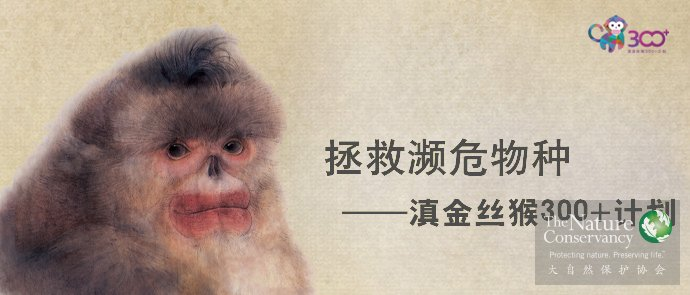
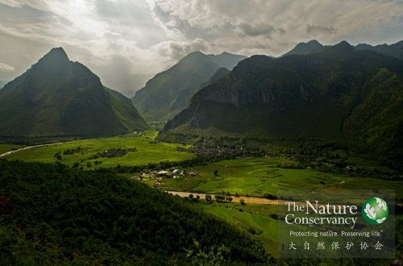
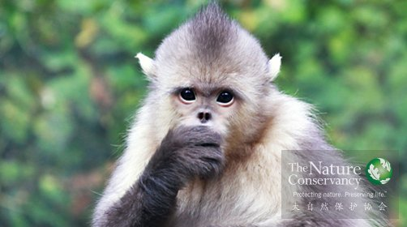
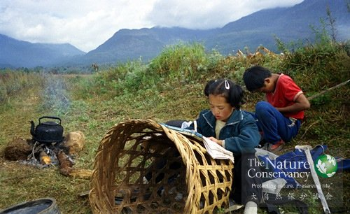
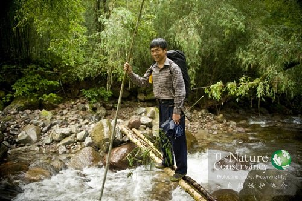

项目概览

为了保护世界上最濒危灵长类动物之一滇金丝猴，云南省绿色环境发展基金会发起了“滇金丝猴300+计划”公募项目。大自然保护协会（TNC）作为科学顾问加入了这个有爱的守护计划。

我们要做什么
防止云南老君山上的滇金丝猴种群灭绝。
滇金丝猴，世界上最濒危灵长类动物之一，目前全世界仅存大概3000只。生活在老君山的这个种群大概有300只，由于偷猎盗伐等人为因素，如不及时保护，危在旦夕。

为什么要保护一群猴子？
其实，我们保护的不只是猴子：
要想让猴子幸福地生活←—→先要保护它们栖居的原始森林←—→保护了原始森林，就保护了生长在森林中的各种珍稀野生动植物，包括各种菌类、中药材←—→繁茂的植被，可以有效地净化水源。同时，保护了人（当地村民）的生计来源以及饮用水质量——所以
保护猴子=保护原始森林 + 帮扶一方百姓

谁会受益
一群猴子：世界最濒危灵长类动物之一。
一片原始森林：丽江最后的原始森林。
一方百姓：周边5个少数民族的传统文化和生计。
钱要怎么花
1. 保证持久、稳定的巡护：巡护队员都来自当地村民，他们也要吃饭、养家，需要合理的薪水；
2. 修缮、完善巡护设施（步道、野外巡护站点）；
3. 利用科学手段监测、巡护滇金丝猴，及周边原始森林（购买监测设备、添置巡护装备……）；
4. 帮助周边贫困村民发展替代生计，村民吃饱穿暖，才不会上山打猎砍树；
5. 建立成熟、专业的志愿者群体，建设志愿者保护站，让更多人有机会亲身参与保护工作；
6. 向公众推广保护理念，让更多人打心里了解、支持保护，是最有效、最持久的保护措施；
我们还想给老张找接班人
老张，叫张志明。
在没有任何资金支持的情况下，老张一个人守着老君山这群猴子守了15年。直到2003 年，大自然保护协会（TNC）开始实施老君山滇金丝猴保护项目，组建了一支以张志明为队长的滇金丝猴监测巡护队。
到今年，老张看猴子将近30年了。但，老张老了。
我们想给老张找几个帮手。

我们的故事
我们更需要你
如果你愿意，我们的志愿者队伍欢迎你的加入
项目进展反馈时间：
毁掉环境轻而易举，但保护却是个慢功夫。老君山的滇金丝猴，从当初的100多只，增长到现在的300多只，用了将近20年。所以,“滇金丝猴300+计划”项目进展的反馈时间，我们会以季度为节点，向您汇报。当然，平日我们也会与您随时分享来自项目地的第一手信息。谢谢您的理解和支持。
善款接收机构
公募及善款接收方：云南省绿色环境发展基金会
科学顾问
科学顾问：大自然保护协会（TNC）
第二阶段项目实施方案（2014.7.1-2015.6.30）
滇金丝猴是地球上最大的猴类，是地球上海拔分布最高的灵长类动物，而且他们长得人模人样，并拥有令人心动的美丽红唇，堪称世间动物之最美，是云南这一世界著名动物王国中的皇冠明珠。
北京大学动物学博士，师从我国著名的大熊猫保护之父潘文石教授对中国特有的濒危灵长类动物白头叶猴进行了长达六年的野外跟踪观察研究，同时也参与了广西喀斯特地貌生物多样性调查和中华白海豚的种群调查。现为IUCN中国灵长类专家组成员，国际灵长类学会会员。2009年加入TNC，负责滇金丝猴保护项目的设计和组织，以及云南国家公园项目在丽江老君山地区的实施。随着TNC四川项目的策划和启动，逐步参与到了社会公益型保护地项目的科学保护以及信息化建设的策划和实施工作中。
中国灵长类专家组组长、中国兽类学会常务理事、中国动物生态学会理事。在灵长类动物生态行为学和生物多样性与自然保护管理、研究方面具有全面而扎实的理论基础和丰富的实践经验，先后在国内外科学核心期刊上发表学术论文40余篇。2003至今，一直在大自然保护协会中国部工作，历任老君山项目负责人、滇金丝猴全境保护项目负责人、云南项目副主任、云南项目代理主任、首席科学家。
2007年6月加入TNC，主要负责云南保护项目策略和方案的制定，项目期间负责国家公园政策和立法的建立。2006年6月至10月期间，为TNC西弗吉尼亚办公室工作，帮助制定西阿巴拉契亚的保护优先区域。2006年6月获得美国耶鲁大学林学与环境学院森林科学硕士学位，2001年毕业于北京林业大学林学专业。